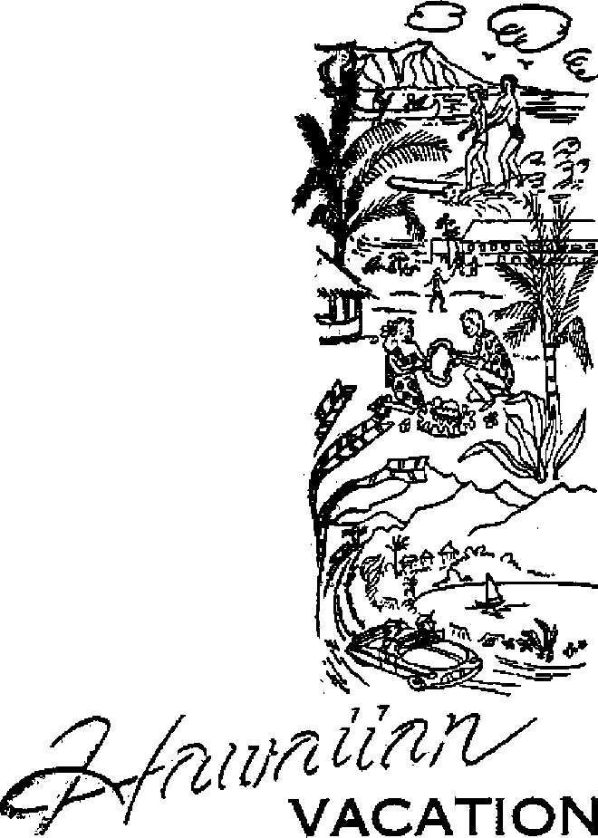

CAN PRIESTS FORGIVE SINS?
Public Scandal Rocking Italy
Hawaiian Vacation
Every Day Is Sabbath Day

THE MISSION OF THIS JOURNAL
News sources that are able to keep you awake to the vital issues of our times must be unfettered by censorship and selfish interests. “Awakel” has no fetters. It recognizes facts, faces facts, is free io publish facts. It is not bound by political ambitions or obligations; it is unhampered by advertisers whose toes must not be trodden on; it Is unprejudiced by traditional creeds. This Journal keeps itself free that it may speak freely to you. But it does not abuse its freedom. It maintains integrity to truth.
“Awake I” uses the regular news channels, but is not dependent on them. Its own correspondents are on all continents, in scores of nations. From the four corners of the earth their uncensored, on-the-scenes reports come to you through these columns. This Journal's viewpoint is not narrow, but is international. It is read in many nations, in many languages, by persons of all ages. Through its pages many fields of knowledge pass in review—government, commerce, religion, history, geography, science, social conditions, natural wonders—why, its coverage is as broad as the earth and as high as the heavens.
“Awake I" pledges itself to righteous principles, to exposing hidden foes and subtle dangers, to championing freedom for all, to comforting mourners and strengthening those disheartened by the failures of a delinquent world, renacting sure hope for the establishment of a righteous New World,
Get acquainted with “Awake!** Keep awake by reading “Awake!”
Published Semimonthly By WATCHTOWER BIBLE AND TRACT SOCIETY, INC.
117 Adams Street Brookljn 1, N. Y. 'tJ. 8. A.
N. H. Knobs, President Grant Smuts, Secretary
Printed thia Issue: 1,300,000
Five cents a copy
Lanfiuas Ie which thh magulnc It gullhhM: BcmlmonUily—Afrikaans. Engliih, Finnish, French, Orman. Hollandlsti, Nurwalsu, Spinlah, Swedish, Monthly—Diplali, Greek, roruiioess, Ukrainian.
Offices Yearly aubicrlptlon Bate
AmorlM, B.S., 117 Adame St., Brooklyn 1, NY. SI Asitratli, 11 Beresford Rd., strwthrteld, N.S.ff. Sa Canada, 40 Irwin Are., Toranlo 6, Ontario 31
England, 34 Craven Terran, London, W. 2 Ta South Afrits, Private Bae, P.O. Biuditonteio,
Traaaraai 7s
Remlttaneai should be sent tn office in your country in compliance with regulations to ruarantee sale delivery of money. Remittances are accepted al Brooklyn from countries where no office Is locateil, by Internationa] money order only. Subscription rates in different countries ere here stated In local currency. Notice of expiration (with renewal blank) is sent at least two Issihs before sutHCrlptlon capites. Changs of addreis when sent to our office may be ennected efteetlre within coo month. Bend your old as well as new address.
Entered is aeond-cisaa matter at Brooklyn. N. Y.
Art of March 3, 1879. Printed in D. S. A
CONTENTS
|
Praying with a Wrong Purpose |
3 |
Pearls from the Poor |
|
Can Priests Forgive Sins? |
4 |
Mithraism in Christendom’s Churches |
|
Confessionals Lead to Corruption |
5 |
Horror Story Terrifies Children |
|
Is Confession Christian? |
6 |
Hazel Hits Haiti |
|
Made in Sheffield |
9 |
“Your Word Is Truth” |
|
Too Big to Explode |
11 |
Every Day Is Sabbath Day |
|
Ancient Alexandria |
12 |
Jehovah's Witnesses Preach in All |
|
Public Scandal Rocking Italy |
13 |
the Earth—Norway |
|
Hawaiian Vacation |
17 |
Do You Know? |
|
Marie Strikes a Foul Blow |
20 |
Watching the World |
21
M M M K3 to K3 to <5 oo m m w w
Volume XXXV!
Brooklyn, N. Y., January 22, 1955
Number 2
MANY persons pray with a wrong purpose. This is obvious from the many things that people ask for in prayer. Some ask God for wealth; others just ask him to win a football game. But a new kind of prayer that has provoked several questions is prayer to test the effectiveness of prayer. Sound strange? Then let the Los Angeles Times (August 15, 1954) explain about the experiments of preacher Franklin Loehr, director of research for the Religious Research Foundation: "Using plants as guinea pigs, the experimenters set about with meticulous care to conduct controlled tests to determine whether prayer had any measurable effect,” And so "the 150 members of the foundation have prayed and pored over some 24,000 seeds.” Preacher Loehr describes the seed-praying procedure this way:
“Use the prayer methods you are accustomed to, plus any other you want to try. Talk to the seeds, visualize them growing, think of them growing, express to them emotions of love and joy and life-sharing, invoke God’s blessing and power upon them, use the laying on of hands—not physically, so as to touch them, however. Give prayers to your seeds half a dozen or more times daily.”
Is this praying with a wrong purpose? Is it Scriptural to pray over seeds? Is it Scriptural to pray for the sole reason of measuring prayer’s effectiveness?
Nowhere in the Bible do we read of Christians’ praying just for the purpose of measuring prayer's effects. The true Christian, both in the apostles* day and now, knows that there is no need to test or measure the effect of proper prayer. Trying to do so could well indicate a lack of faith. Says Jehovah's Word: “Let him keep on asking in faith, not doubting at all, for he who doubts is like a wave of the sea driven by the wind and blown about. In fact, let not that man suppose that he will receive anything from Jehovah.” —Ephesians 3:20; James 5:16; 1:6, 7, New World Trans.
But now this matter of praying for seeds to sprout. What does a seed have to do with God's kingdom and the vindication of the holy name of Jehovah? Are we to imagine that the great God who runs the universe is concerned about a seed that glory-seeking individuals want to germinate just to see how effective prayer is?
According to nature, seeds may or may not sprout. So there is no glory due the boy in the following statement by preacher Loehr: “It seems impossible to predict at the outset who fis going to be most effective. In one family, a small son was most effective, and he prayed just once,” Why were the seed-prayers of the others not so successful? Is God partial? Or is the truth of the matter the fact that, according
to the laws of nature, we do not know which seeds will sprout? Says the Bible: “Early abroad, to sow thy seed, and let evening find thee still at work; which sowing shall speed better, none knows, or whether both shall thrive to thy profit” (Ecclesiastes 11:6, Knox) This scripture can be applied chiefly to the spiritual seed of the Kingdom, but it can also be applied to literal farming. What is advised is hard work, such as sowing and watering, because we do not know which seeds will thrive.
The important thing is not how well some seeds sprout but, in the matter of prayer, what is right. Jesus gave us the acceptable pattern: “You must pray, then, this way: ‘Our Father in the heavens, let your name be sanctified. Let your kingdom come. Let your will come to pass, as in heaven, also upon earth. Give us today our bread for this day.” (Matthew 6:9-11, New World Trans.) Note that Jesus placed Jehovah’s name and kingdom far ahead of personal needs. And even personal needs were limited to essentials! Is it essential to pray for a seed?
■ For prayer to be answered we must pray for those things that are in harmony with Jehovah’s purpose of a new world and with his written Word, such as for food, for forgiveness, for understanding, for family and for the destruction of the wicked. So, to preacher Loehr’s words, “We have some pretty impressive results, but we make no claims in these fields at present,” we say, in the words of the Bible writer James: “You do ask, and yet you do not receive, because you are asking for a wrong purpose.”—James 4:3, New World Trans.
THE Knights of Columbus said in the St Louis PostDispatch: “Christ empowered Catholic priests not merely to announce that sins were forgiven, but actually to forgive sins . .. And finally note that this authority is not confined to any particular kind of sins, but extends to all sins without exception.” This view is upheld by the Catholic Encycto-pedia, which says: “The pow
er to forgive extends to all sins: 'God makes no distinction; He promised mercy to all and to His priests He granted the authority to pardon without any exception? ”
PriestsJForqive Sins?
Io become informed. This article should prove enlightening.
Regardless of religion or nationality, salvation to life will depend
The means by which priests pardon sins is called the "sacrament of confession. ”
Confession, according to a Catholic catechism, “is a sorrowful declaration of our
sins to a Priest, in order to obtain Absolution [forgiveness] from him.” Auricular confession simply means confession into the ear of a priest.
However, is this teaching Christian, that is, was it taught by Jesus and his apostles? Can priests forgive sins? Documented records of religious historians plus an abundance of Scriptural testimony force this subject to an irresistible conclusion. One point appears unanimous among historians, that is, that neither the Jews nor the apostles nor the disciples practiced private or auricular confession. According to Samuel Barnum, Count de Lasteyrie, a French nobleman, in his History of Auricular Confession, “quotes from Tertullian, Chrysostom, Augustine, Basil, Ambrose, and other Church-fathers to show that among the early Christians confession of sins was made to God alone . . . that they held, as Augustine says expressly, ‘that man cannot remit sins,’—and that auricular confession, unknown to earlier Christians, was the work of popes and councils.” Tertullian, says Lord Bexley, “speaks adversely to auricular confession,” and “in all his references to confession never once describes confession as being made to a priest, but to God.” The Encyclopaedia Britannica, regarding auricular confession, declares that “for the first three centuries little or no mention is made of any such practice.” And McClintock and Strong’s Cyclopaedia concludes: “Auricular confession . . . was wholly unknown to the ancient Church.”
History shows that not until the Lateran Council A.D. 1215 was confession declared an official dogma of the Catholic Church and in the year 1439 in the Council of Florence it was added to the number of “sacraments.” Hence the auricular confession, says Domenica, “lacks nearly 1400 years to be a Christian and Apostolic practice.”
Great claims are advanced as to the moral and social value of confession. The Catechism of the Council of Trent asserts that confession not only removes the sinner’s present malady, but serves as an antidote against its easy approach in future; and that it likewise contributes powerfully to the preservation of social order. As to its moral value, the catechism says: “Abolish sacramental confession, and, that moment, you deluge society with all sorts of secret crimes—crimes too, and others of still greater enormity, which men, once that they have been depraved by vicious habits, will not dread to commit in open day. The salutary shame that attends confession restrains licentiousness, bridles desire, and coerces the evil propensities of corrupt nature.” In regard to this declaration, Cramp in his Text-book of Popery declares: “Seldom have so much misrepresentation and untruth been conveyed in so few words. The very reverse of these statements is the fact.”
Confessionals Lead to Corruption
This is certainly strong language, yet no stronger than has been used by many others who have directly known or carefully investigated the facts on this subject. John Henry Hopkins, bishop of the diocese of Vermont, in his book The History of the Confessional, writes: “Where has the boasted moral superiority of the Confessional been found in the countries which continued subject to the papal scepter? What portions of the globe were so noted for robberies and assassinations as the very territories of the popedom? Where were chastity and conjugal fidelity so lightly regarded? Where was, notoriously, so little restraint upon the worst passions of our nature, lust, malice, and revenge? Where was the administration of justice so uncertain, bribery so shameless, per-
sonal liberty so insecure, faction so fierce, cupidity so unscrupulous, despotism so cruel?” All these crimes were committed in Catholic lands where confession was decreed under pain of excommunication.
Lasteyrie, in his History of Auricular Confession, says Barnum, “devotes one chapter to accounts of the seduction of women in Spain by means of confession,” and mentions “the brief of pope Paul TV., January 18,1556, commanding the inquisitors of Granada to prosecute the priests whom the public voice accused of outraging the confessional.” Further, he says: “In 1561, 1564, bulls were issued by the same pope against the same evil. An edict published at Seville in 1563 gave rise to such numerous denunciations of confessors by females that it took 120 days to register them all, and the prosecution of the delinquents was abandoned on account of their prodigious number.”
Roman Catholic archbishop Kenrick is quoted by Edward Beecher in his Papal Conspiracy Exposed as saying: “We scarcely dare to speak concerning that atrocious crime in which the office of hearing confession is perverted to the ruin of souls by impious men under the influence of their lusts. Would that we could regard it as solely a conception of the mind and as something invented by the enemies of the faith for the purposes of slander! But it is not fit that we should be ignorant of the decrees which the pontiffs have issued to defend the sacredness of this sacrament” Little wonder, then, that McClintock and Strong’s Cyclopaedia declares: “Auricular confession is unquestionably one of the greatest corruptions of the Romish church. It tends to corrupt both the confessors and the confessed by a foul and particular disclosure of sinful thoughts and actions of every kind without exception.”
What about Roman Catholic claims that Christ empowered Catholic priests to forgive sins? The Question Box, a Catholic publication, states: “Auricular Confession is nowhere expressedly mentioned in the Bible,” but adds, “Christ Himself divinely commanded it by giving His Apostles the power to remit and retain sins.” Perhaps Roman Catholics can explain why it is that we do not find one instance where the apostles in their ministry, which covered a period from forty to fifty years, exercised this prerogative if they had it. Nowhere does the Bible say that the apostles or disciples forgave sins. Why this silence?
Did Peter forgive-sins? The Bible says No. In Acts, chapter eight, we find a very significant episode that clearly demonstrates that the apostles never exercised such a prerogative. A certain man named Simon offered Peter a sum of money for the gift of the holy spirit. Peter rebuked the man, saying: “May your silver perish with you.” The man begged for forgiveness. Did Peter forgive him? No. Instead of forgiving him for sins against God, Peter told Simon to pray to God for forgiveness. “Repent, therefore, of this baseness of yours,” said Peter, “and supplicate Jehovah that, if possible, the device of your heart may be forgiven you.” Here was a golden opportunity for Peter to exercise a prerogative to forgive sins if he had had it. Since he did not have it, he told Simon to pray to God for forgiveness.—Acts 8:1924, New World Trans.
Did Paul forgive sins? The Bible does not say so. He had splendid opportunities, too, to exercise that authority had he possessed it. But not having it, he could do no more than Peter, asking sinners to pray to God. At Philippi a jailer inquired of Paul and Silas: “What must I do to get saved?” Paul simply told the man: “Believe on the Lord Jesus and you will get
saved, you and your household.” Not one word was said about his having to confess to a priest or to any other man. Paul, in his letter to the Hebrews (7:23-25), argues that Jesus has no successors, needs no priests as mediators, that by virtue of faith in Christ’s sacrifice sinners can come directly to God through prayer; because Jesus acts as High Priest who is alive forever. "For there is one God, and one mediator between God and men, a man Christ Jesus, who gave himself a corresponding ransom for all.” Christ therefore fulfills the Levitical priesthood. He is man’s way to God and God’s way to man. Being alive, Christ needs no successor or priest to mediate for him.—Acts 16:25-34; 1 Timothy 2:5,6, New World Trans.
What did the most beloved disciple of Jesus, namely, John, have to say about receiving forgiveness of sins? John, like Peter and Paul, refers to Christ as the means of forgiveness. Said he: "If anyone does commit a sin, we have a helper with the Father, Jesus Christ, a righteous one. And he is a propitiatory sacrifice for our sins, yet not for ours only but also for the whole world’s.” "If we confess our sins [to God], he is faithful and righteous so as to forgive us our sins and to cleanse us from all unrighteousness.” “However, if we are walking in the light as he himself is in the light, we do have partnership with one another and the blood of Jesus his Son cleanses us from all sin.” The harmony and perfect understanding of the apostles on this point are undeniably apparent. —1 John 2:1, 2; 1:9; 1:7, New World Trans.
For the Catholic Church to quote James 5:16 as support for the sacrament of confession is to throw a boomerang, because James says (New World Trans.), “Therefore openly [not privately or in secrecy] confess your sins to one another,” that is, mutually, which would mean that when a sinner would confess his sins to a priest, the priest, in turn, would oblige by confessing his sins to the penitent. This, of course, is wholly contrary to Roman Catholic practice.
That men can go directly to God for forgiveness, without the need of any earthly priest as an intermediary, is clearly taught throughout the Scriptures. Jesus, for example, instructed: “You must pray, then, this way: 'Our Father in the heavens, . . . forgive us our debts, as we also have forgiven our debtors.’ ” He makes no mention of a priest. Who is it that forgives our sins? God himself answers: “I am Jehovah thy God, the Holy One ... I, even I, am he that blotteth out thy transgressions for mine own sake; and I will not remember thy sins.” To Jehovah the psalmist David confessed, saying: “I acknowledged my sin unto thee [Jehovah], and mine 1 iniquity did I not hide: I said, I will confess my transgressions unto Jehovah; and thou for* gavest the iniquity of my sin.”—Matthew 6:9,12, New Wortd Trans.; Isaiah 43:3,25; Psalm 32:5, Am. Stan. Ver.
But you ask: "How are we to understand John 20:21-23, which is cited in support of the Catholic doctrine?” This scripture, according to the New World Translation, reads: “Jesus, therefore, said to them again: ‘May you have peace. Just as the Father has sent me forth, I also am sending you.’ And after he said this he blew upon them and said to them: ‘Receive holy spirit. If you forgive the sins of any persons, they stand forgiven to them; if you retain those of any persons, they stand retained.’-” Please note, Jesus did not send them out to act as confessors. He merely assures them that the holy spirit would enable them to declare forgiveness; that Jehovah and not they would actually do the forgiving. That this is the correct under-
standing is assured us by none other than Jesus himself wno, after his resurrection, declared that “on the basis of his name repentance for forgiveness of sins would be preached in all the nations—starting out from Jerusalem.” That the apostles so understood Jesus* words is obvious by Peter’s reply to the question: “Brothers, what shall we do?” Peter told them: “Repent, and let each one of you be baptized in the name of Jesus Christ for forgiveness of your sins.” The good news that the apostles declared was that salvation was through Jesus Christ.—Luke 24:46-48; Acts 2:37, 38, New World Trans.
Discussing this point, Angelo Lo Vallo in his article “Were the Apostles ‘PriestConfessors* ?” says: “When the Roman Church interprets verses 20-23 of the 20th chapter of John, she customarily tells her adherents that Christ addressed these words to the apostles, who were the only ones present at the moment. In doing this she deliberately meddles with the facts of Scripture and leads her people astray. For even the Roman Catholic version of the Bible, the Douay, uses the term 'disciples’ and not 'apostles* in verse 19 as descriptive of those present on this particular occasion. In this instance the word 'disciple’ is a generic term that refers not only to the apostles but also to the other disciples, among whom were women such as Mary, the mother of Jesus, and the other Marys. Therefore, if the Roman Church wants to interpret this statement of Christ as meaning to confer the power to forgive or retain sins, then to be logical she will have to admit that all those present—including the women—obtained this spiritual power to remit sin.
“But the Roman Catholic Church cannot do precisely this, because she would then run the risk of being accused of borrowing from paganism and of establishing in the Church a new caste system of priestesses’ To circumvent this embarrassing difficulty, she arbitrarily restricts the term disciple as referring only to the apostles. Once she does this she stands contradicted by one of her own rules of Scripture inter-pretation—namely, that when a word, phrase, sentence, or text has more than one meaning, no one, not even the Pope himself, has the right arbitrarily to accept only one meaning and restrict its application to only one person or group of persons to the exclusion of all others. Thus, in this case, the Church must be adjudged guffty of violating this all-important norm, and consequently all arguments that she might advance in defense of her thesis must be rejected as entirely unreliable.
“Moreover,” says Lo Vallo, “if Christ, when He uttered these words, intended to make the apostles priest-confessors with a priestly character on their souls from which flowed a spiritual power to forgive or retain sins, then when and where did all this happen to Thomas and Paul? Thomas was absent on this momentous occasion; and Paul was not yet converted to Christ. No amount of theological hair-splitting will ever enable the Roman Catholic Church to solve this difficulty.”
So, by weighing all the testimony before us, we are forced to conclude, even as did Barnum, that neither pope nor bishops nor priests have the right or the authority or power to forgive sins, that sins are forgiven only through faith in Jesus Christ, that, as one writer said, “the so-called sacrament of confession is a mere human invention, unscriptural and anti-scriptural, unalterably and grossly immoral in its nature and tendency, fraught with the most imminent and dreadful danger, temporal and spiritual, to priest and to people, to the church and to mankind, for this world and for the world to come.”
'7^
By “Awake!11 corretpondent in Britain NGLISH mariners of old used to sing
day “hea pute< The haps
Hearts of oak are our ships . . To-he "hearts of oak" have become ts of steel,” and the land once refer its oak is now noted for its steel, ity of Sheffield has done more, per-than any other town to enhance this reputation, for wherever the word “steel" is mentioned, certain to be heard also is the name “Sheffield.”
From the quiet English countryside—the producer of oak—to this center of steel, with its streets and factories and chimneys and smoke, seems a far cry. But no, this mighty industrial city was bom by trickling streams, in green cloughs and with the fresh scent of heather in its nostrils. Even today the beauty of its surrounding countryside has not been lost and, to quote a popular saying, Sheffield is but “an ugly picture in a beautiful frame.”
By the fourteenth century Sheffield was already known for its production of cutlery. Sheffield’s prominence today is due, not just to its fine cutlery, but rather to the value of its specialized steel and immense steel forgings. The important factor is the value of Sheffield’s special steel, such as steel that can be drawn out into wire strands one thousandth of an inch thick or steel able to stand the severest test in a modem jet engine or steel that must withstand steam at a working pressure of 1,400 pounds to the square inch. The price of some special tungsten steels is as high as eighty-five cents a pound. And it has been estimated that Sheffield’s annual one million tons of steel are equal in value to
the other fifteen million tons produced throughout Britain!
These modem Achievements have not come about suddenly. Says Mary Walton in her book Sheffield, Its Story and Its Achievements: “The industry which was to overshadow all the others grew slowly in its early stages. Huntsman’s invention of crucible steel took place about 1740, and steel manufacture was well established, on a small scale, by 1780, but it was not until after 1815 that the industry really got started on that sweeping and spectacular progress which carried Sheffield without interruption to her place as the City of Steel.
“On May 1st, 1161, Richard de Bush, as lord of the manor of Kimberworth granted to the monks of Kirkstead Abbey in Lincolnshire 'a site within the territory of Kimberworth (near Sheffield) for their houses and an orchard and four forges, to wit, two for smelting iron and two for forging it, whensoever they wished, and leave to dig for ore throughout the territory of the township, so much as would be sufficient for two furnaces.’ The smelting and forging would be carried on mainly in the open air, and not always in the same place, as primitive smelting required the full force erf the prevailing winds in the absence of effective artificial blast.
“The technical secrets of the Middle Ages were not committed to writing. All we know of the process of early iron smelting is that ore was put in a furnace and packed around with charcoal, and the fire kept alight by continual refuelling for several days; then the whole mass was allowed to cool down, and the lump of melted iron taken out at the moment which practice had proved to be best.
“Unfortunately we do not know what proportion of fuel to iron was used, or what was the state of the iron when it was judged best to take it out. The degree of heat, the amount of fuel, and the length of the smelting process would determine whether the resulting metal was pure iron or mild steel. Whichever was made, might be the result of choice or a degree of ignorance.”
Around the year 1700, there is a record of Henry Ball, a Sheffield steelmaker, who was engaged to “make slitt and gadd” steel It was evidently at this time that steelmakers began to reason that if hammering would rid the iron of some of its impurities then other methods might be found to purify it; and if iron would absorb carbon to make it hard, then possibly other elements could be added to make steel of the quality desired. No doubt this is how Benjamin Huntsman reasoned. Having been bom in Lincolnshire, he settled in Handsworth (now a suburb of Sheffield) in 1740. By trade he was a watchmaker, and possibly his interest in steel sprang from his desire to create a good watch spring. Huntsman’s work can be said to have helped the development of that highgrade steel for which Sheffield is so famous.
Hand-hammering was superseded by the steam hammers that gradually grew to accommodate the sizes of forgings. But not in size alone did they grow, for these modern giants are as precise as they are powerful, a modem 800-ton hammer being able to crack a nut without damaging the kernel. But steam hammers alone were insufficient and only with the development of forging presses have the heaviest of present-day forgings been made possible. No less important are the forging plants that can shape masses several feet in diameter by exerting a continuous squeeze of 6,000 tons or more. These modem plants, together with their auxiliary cranes, rotating gear and other tools for manipulation, are equally a's fascinating to watch as the furnaces. It is in the large melting furnaces that the huge ingots of steel are produced. The spectacle of such a plant at work on hot masses of steel, upward of 200 tons in weight, is one to be remembered.
Whatever the requirement, the steelmaker knows how to “Charge” his furnace with the elements required. Normally, steel is melted from specially selected pig iron and scrap. This may be done by the “openhearth” method or by electric heat, since this yields steel very free from nonmetallic inclusions and which possesses increased resistance to shock effects. As the scrap and pig iron start to melt, sulphur and other impurities, through an acid process, are expelled. This is known as deoxidation. Now comes the time to “charge” the furnace with the special alloying elements. There are many of these: titanium, cobalt, columbium, chrome, nickel, molybdenum, manganese, to mention but a few. The requirements govern the choice and the steelmaker knows his mixture as a Yorkshire housewife knows her Yorkshire pudding.
Then comes the time to empty the furnace, a process known as “tapping.” White-hot, molten steel is rather like milk in appearance and just as easy to pour. But with 200 tons in the furnace a special lifting and pouring gear is necessary together with the workmen’s high degree of skill. The order to tap the furnace, however, comes from a metallurgist. A small sample, of steel will have been taken from the furnace to his laboratory. Then if his special tests show the steel has been charged correctly and if all the other processes are up to standard, he will give the order to tap the furnace. The steel is now transferred to a large bucket and taken to the ingot pits by overhead rails. Here the steel is poured into ingot molds and left to cool. Soon it will be converted into billets or bars for commercial purposes.
Hollow Forgings and Stainless Steel
One of the most interesting operations in modem steelmaking is the production of “hollow forgings.” Normally, when we think of a steam boiler we visualize many plates riveted together. But with the increase in the thermal efficiency of steam plants over the last few years there have come higher steam pressures and temperatures. Steam boilers have to be made stronger, and this has largely led to the abandonment of riveted constructions and to the substitution of forgings in a single piece, A celebrated achievement along this line was the production of twenty-four hollow-forged, seamless boiler drums for the transatlantic liner Queen Mary.
In making hollow forgings the furnace needs to be heated, charged, tapped and the ingot allowed to cool. When cold the ingot can be cut to length and a hole trepanned through it, thus completely removing its center. In this way it is possible to keep one end of a drum completely closed, the other having only a small manhole for inspection.
In 1914 the process of making stainless steel was discovered in Sheffield. It was Harry Brearley, born in Sheffield, who played an important part in its development and who, in fact, took out the American patent.
TubaLcain was a “forger of every sort of tool of copper and iron.” From earliest times metals have played a big part in man’s life, often to his own hurt. We may rejoice, however, in the knowledge that in the new world of God’s promise this planet's resources will be used in the peaceful purposes of its contented inhabitants and will find their legitimate places in beautifying the earth to the praise of its Creator, Jehovah.
Too Big to Eoplode
A United Press dispatch, dated September 21, 1954: A new book says America now has a “super-giant” hydrogen bomb probably powerful enough to knock out an entire nation with a single blow. A copyrighted, condensed version of the book, which was written by James Shepley and Clay Blair, Junior, of Time magazine, has appeared in the magazine U.S. News d World Report, The authors say that the missile has an explosive force of nearly forty-five million tons of TNT. And they add that “it seems more than probable that no people could survive” the impact of such a bomb.
Shepley and Blair say the estimated power of the bomb is so terrible that officials decided not to risk setting it off during the tests in the Pacific this spring. The government never has said publicly how much power it thinks the big bomb packs. But sources revealed last May that it was officially rated at between forty million and forty-five million tons. That would be twenty4our hundred times the force of the A-bomb that hit Hiroshima.
By "Awakal” correspondent in Egypt
_ JT WAS in 332 B.C. that Alexander the Great I built In the western part of the delta of the 1 well-known Nile River a city, and called it by his name. The city was situated on a strip of land between the Mediterranean Sea and the big lake now known as lac Mariout. After Alexander's death and the division of his empire, Alexandria flourished as a capital under the rule of the Ptolemies and came to be an artistic and literary center of the East. Before the time of Christ it could boast many temples and museums and a remarkable library that contained almost 700,000 volumes. Apart from this notable repository of knowledge, which was burned by the Romans in 48 B.C., Alexandria was also famed for its 400-foot-high lighthouse that was classed among the seven wonders of the world.
Alexandria was a center of Greek philosophy and a prosperous commercial city, dealing with the Mediterranean countries and the lands of the Far East, such as Ceylon, India and China. Its history can be divided into two important periods. The first covered nearly a thousand years, from 332 B.C. when the city was founded until it was conquered by the Arabs, A.D. 641. The second period extends from the Arabian conquest up through the present day.
During the city's early history it was the home of many Jews, who even had their own senate and judicial council. In the course of time these Jews forgot the Aramaic and Hebrew languages and spoke only Greek, which led to their being called Hellenists. On Pharos, a small elongated island near Alexandria, seventy-two prominent Greek-speaking Jews began the translation of the Hebrew Scriptures Into the Greek language. It was this translation that was used extensively by the first-century Christians in preaching to the Hellenist Jews and that was used by the apostles themselves. Today it is known as the Septuagint (or “LXX,” indicating the number seventy) version. Fragments of this translation are kept at the Cairo French Institute of
Archaeology and are of outstanding importance due to the fact that they contain the Tet-ragrammaton, or the four Hebrew consonants of the divine name Jehovah, amid the Greek text and are of either the second or the first century B.C.
It is thought possible that Alexandria received the message of true Christianity through Egyptians who had been present in Jerusalem at the time of Pentecost and there took in knowledge about salvation through Jesus Christ. However, the Alexandrians intermingled Christianity with pagan philosophies.. Athanasius, a bishop of Alexandria, played a vital part in the production of the Nicene Creed and the adoption of the trinity doctrine. False teachings brought divisions among the people, and religious division is very evident in Alexandria to this day. Among the city’s population of about a half million people there are many conflicting denominations, including Orthodox Coptics, Catholic Coptics, Greek Catholics, Syrian Catholics, Armenian Catholics, Protestant groups, and, of course, the Moslems, who are the greatest in number.
It was in 1930 that Jehovah’s witnesses began to proclaim to the many nationalities who live in Alexandria the good news of Jehovah’s established kingdom. During the first couple of years three people met in a home for study. Then two full-time missionaries arrived. It was necessary to use Bible literature in many tongues—carrying the literature in at least three languages whenever Kingdom publishers engaged in the house-to-house ministry. The work in this city has grown until today there are ninety-five active ministers sharing in the proclamation of the Kingdom good news. Despite opposition on the part of certain so-called Christian denominations, Jehovah’s name is being made known more and more, and additional sheeplike ones continue to abandon this world’s dying system of things to enjoy the peace and safety that come from Jehovah’s hand.
PUBLIC SCANDAL
ROCKING ITALY
CORR
By “Awakel” correspondent in Italy
THE biggest public scandal in the postwar era and in fact for many a year of Italian modem history is now rocking Italy. This scandal continually threatens the present government and may yet have grave unforeseeable consequences in the future. It is the topic of conversation everywhere. The ship of state is being rocked by the sea of malcontentment aroused by the Italian people? What has caused so much public clamor that even the international press has taken notice of it?
On April 11, 1953, the body of a young girl, Wilma Montesi, was found on a deserted beach near Rome called Tor Vaian-ica. After a brief investigation the police stated that she had died by accidental drowning. Because of much agitation by the press, where references had been made that the girl had been murdered, the district attorney's office opened a judicial investigation on the case. They too confirmed the report of the police and concluded that after a full investigation all insinuations and calumnious stories making their rounds were unfounded, and hence closed the case. Their report was dated January 3, 1954.
Sensational Revelations
But the matter was far from being closed. The press was in constant fermentation. Silvio Muto, publishing his own relatively unknown newspaper, made the allusion that Wilma Montesi died under criminal circumstances after having passed out at a narcotic party. Soon after the closing of the first judicial investigation, Muto, the newspaper reporter, was indicted for trial by the district attorney’s office for having placed in circulation false and defamatory statements. Just as this trial was about to begin, the district attorney’s office closed for the second time their judicial investigation as to the death of Wilma Montesi. This investigation had been started in order to calm public criticism. Again the conclusion was accidental drowning.
On the first day of the trial Muto sustained his innocence by naming two prominent persons in Roman society, Piero Pic-cioni and Ugo Montagna, as involved in the death of the girl. He referred to other individuals that could give the court more information on these individuals. Figuring prominently in his story was Anna -Maria Caglio, already well known for her statements to the press against Ugo Montagna. She seemed to be in a position to know, having been his mistress up until a short time ago. She claimed that she left him when she found out about his corrupt dealings.
The defense lawyers called on Anna Maria Caglio to support what Muto had written in his newspaper. Out came some stories that rocked Italy to its roots. Of out-
standing interest in her story appeared a hunting lodge near Rome named “Capo-cotta” that was run by Ugo Montagna, her former boy friend. Accounts of sex orgies, narcotic parties, etc., that had taken place at Capocotta came out that offended all sense of morality. She testified that involved in the case was a gang of dope smugglers using the isolated area near Capocotta and Tor Vaianica (where the dead girl’s body was found) for their smuggling activity.
According to Caglio’s story, once on April 29,1953, she was with Piero Piccioni and Ugo Montagna when they called at the ministry of interior. Ugo Montagna and Piero Piccioni went in to talk with the national head of the Italian police, Pavone, and having returned to the car Montagna is reported to have said, “I have taken care of everything." She claimed that this was in reference to the Montesi murder. Other incidents were recounted showing the close association of Montagna with high government officials. These sensational revelations had a stupefying effect on the people. Even more incredible and astounding appeared the fact that she had already told her story to the district attorney when he had investigated the rumors regarding the death of Wilma Montesi.
Many of her declarations had a dramatic confirmation during the trial from a report prepared by the carabinieri, the semimilitary police force of the government. Muto’s lawyers were demanding that the report of the carabinieri on Montagna be read, since it was in the files of the district attorney’s investigation on the Montesi case. Despite attempts on the part of the district attorney to prevent the reading of this report, the judge finally permitted it to be read in court. This sensational report showed the great influence Montagna had on various high government officials. Other well-known personalities were named as personal friends and business associates of Montagna. Among these was the personal physician of the pope, Count Galeazzi Lisi, the national head of file Italian police, Pavone, prefects, Piero Piccioni, and other lawyers and doctors. It showed that Ugo Montagna was the sole administrator of the corporation running Capocotta, having as a- business associate Count Galeazzi. Montagna was shown to have had a rather long criminal record, a spy for the Nazis and Fascists, then a companion of the Allies, procuring women of easy morals for his associates. This came not from some young, supposedly revengeful mistress but from a report signed by Colonel Pompei of the carabinieri!
The scandal took another melodramatic turn. The national chief of police, Pavone, resigned the next day after the reading of the Pompei report! On March 12, 1954, another report on Montagna in the district attorney’s file received from the treasury department of the government was read in court. This dealt with his business dealings and various associates in corporations formed, naming the individuals implicated. Some names had already been brought out by the report of the carabinieri. His income tax evasion was exposed.
Things were looking bad for Montagna, To stop any further incrimination against him and to warn the “higher-ups," Montagna called a press conference the next day, stating that should he talk: “This isn’t to exclude the end of the world. Each one will have to assume his own responsibility before the law and public opinion." With this declaration he released a list of names of those who frequently paid visits to Capocotta. On the list appeared names of royalty, generals of the army, air force and carabinieri, high government and police officials, deputies, prefects, lawyers, doctors, etc.
AH over Italy interest was high on the case. What would happen next? Where would this chain reaction stop firing? Repercussions were heard in Parliament. To save face and stop the public clamor for action on the part of the government, the prime minister appointed a minister of his cabinet, De Caro, to conduct an investigation on departments of the government and their relations to the Montesi case and charges of corruption.
March 20, 1954, tension is high around the court building where the trial of Muto is still going on. Due to the dramatic turn of events heavy police reinforcements are seen around the building to control the jam of curiosity seekers anxious to learn what is being said inside the court building. On the witness stand sits Anna Maria Cag-lio voicing more sensational words: 1‘Unfortunately, I learned that the head of the band dealing in the traffic of narcotics is Montagna, who is connected with the disappearing of many women. He is the brain of the organization, while Piero Piccioni is the murderer!” These accusations made the political implication, already grave, take even a more serious turn, because the father of Piero Piccioni is the minister of foreign affairs and a leading figure in the Demo-Christian party, which has the majority in Parliament.
The public and the press were more keyed-up than ever in wanting to know what the truth was and who had caused the murder of Wilma Montesi. On all sides the demand was mounting for the judicial forces to take action and reopen the case concerning Wilma Montesi. It became apparent that Muto was no longer the one to be on trial. Finally, the district attorney asked the judge to suspend the Muto trial and to turn back to the district attorney’s office all the material dealing with the Montesi case and to reopen the judicial investigation for the third time on the death of Wilma Montesi. On March 23, the Muto trial was suspended and the third judicial investigation opened! This time a judge of the appellate court, Dr. Sepe, was given charge of the investigation.
Third Investigation and Arrests
As the months pass public interest follows closely the various developments of the Montesi affair. On July 1, 1954, the Minister of the Cabinet De Caro made a report on his findings in a stormy session of Parliament. De Caro refused to discuss the judicial aspects of the Montesi case until the judicial branch finished Its investigation. Only the conduct of governmental agencies was discussed. The most reliable newspaper of Italy, the Corriere Della Sera, stated that the results of the investigation were “very thin,” and probably did not satisfy anybody.
The press followed closely the investigation made by Dr. Sepe. Over 700 witnesses were called by him for questioning. Each day speculations could be found in the press on what probably was said and what might happen. Actors and actresses were called in to be questioned as well. Piero Piccioni is an Italian band leader who had received training in Harlem, New York, and was the first Italian band leader to introduce be-bop in Italy. Practically all strata of Italian life figured in on the investigation. During all his investigation Dr. Sepe made no announcements except to summon individuals for questioning or arrests of minor characters who had lied under oath.
On July 22,1954, Dr. Sepe handed to the district attorney’s office the first part of his report and then a second part on September 10, 1954. Over eighty-six large volumes containing the proceedings of the investigation were given on which an indictment could be based. At this time three
of the caretakers of Capocotta were arrested with one of their wives. It is Mt that their testimonies were the ones that broke the case, although their information was not given voluntarily. As yet no action came from the district attorney’s office. To prod this office along, and as a precautionary measure, Dr. Sepe had the passports revoked of Piero Piccioni, Ugo Montagna and that of the former police chief of the province of Rome, Saverio Pdlito. This indicated in which direction the investigation would now go and possible implication in the murder. Expectations were now running high that the end of the case might be in sight after almost a year and a half.
On September 11, 1954, Dr. Sepe made an unusual announcement that he was suspending his investigation until an indictment or other indications would come from the district attorney’s office. To the fore came more rumors and charges against the government that they were stalling and trying to cover things up.
Events began to precipitate and became melodramatic. September 19,1954, Attilio Piccioni, the minister of foreign affairs, resigned his office. He claimed that he could thus better defend his son against the false charges certain to be levied against him. Late September 21, 1954, Piero Piccioni was arrested at his home charged with the death of Wilma Montesi. Ugo Montagna was arrested for favoring the accused murderer and trying to cover Pic-cioni’s guilt. The police chief of the Rome province, Saverio Pdlito, who had directed the original investigation on the Montesi case, was not arrested because of his age but was charged the same as Montagna plus “having done this with the abuse of power and the violation of the duties of a public official.” So it seemed that the theory that Wilma Montesi died by accidental drowning was now definitely set aside.
Block-letter headlines appeared in the papers making these announcements. Police and troops were confined to their barracks ready for any possible rioting. The news spread like wildfire through the streets of Rome, as the people became more and more excited. Rapidly followed charges against about thirty other individuals who either testified falsely or otherwise sought to obstruct justice. Among these are some of the police officials who carried out the original investigation on the Montesi affair. More dramatic arrests are anticipated and there is no telling how far these may go.
The Communists, always exploiting every turn of this affair, brought the matter up again in Parliament and the Senate charging the government, during stormy sessions, of being morally unfit to rule the nation. In both houses, however, a narrow vote of confidence was obtained by the government. Yet the future of the present government does not appear very good. Already the Communists have gained much by this affair.
The international press has reported on the case, making unfavorable comments on the political setup in Italy. The Manchester Guardian stated that the Montesi affair had assumed the proportion of the famous “Dreyfus affair” of France during the last century. The Economist of London stated that a turn in Italian politics can be expected and not to the advantage of the Italian democracy.
At this writing Dr. Sepe is continuing his investigation questioning individuals indicted. The second phase of the investigation is expected to last for some time yet before the trial comes up. No telling, however, what further findings there may be.
By “Awake!11 correspondent in Hawaii
MOST of us have at some time had the desire to travel, to visit some of those “faraway places” we have read or heard about. And with our speedy modes of transportation in this day and age it is nothing for people to vacatioij far away from home in the hope of “getting away from it all ” at least for a short time. Usually, when one thinks of vacationing, the summer months pop into mind, but today the modern airlines have made it possible to take vacations any month of the year. Those who want to escape the chilling blasts of a cold northern winter can in a few hours' time be basking on a beach of a summer clime. Time was when travel was for the ultrarich, but with the introduction of tourist rates it is now possible for more and more persons to see a few of earth’s beauty spots.
One spot that is becoming increasingly popular with tourists and vacationers each year is Hawaii, a group of islands located in the blue Pacific some 2,000 miles off the western coast of the United States. Maybe you have longed to visit these islands, but just never could seem to afford it or find the time. But, then, there are always the “eyes of the mind,” and with a bit of imagination one can be carried far away. So let us take you on such a trip to Hawaii, isles of tropical beaches, sunshine, pineapples, lovely flowers and awesome volcanoes.
If you approach from the east you may near the islands just as the early morning sun is tinting the fluffy blanket of clouds below a rosy hue. Look sharply there to the left and you can see the faint outline of the island of Molokai through the early morning clouds. Now to the right, outlines of the island of Oahu are becoming visible out of the gray. Minutes more and you are sighting famous Koko Head and Diamond Head craters, and the stewardess announces that in five minutes you will be landing at Honolulu International airport, one of the busiest in the world. There happens to be a celebrity aboard, and so a troupe of singers playing ukuleles and accompanying hula girls is on hand for a real Hawaiian welcome. Around your neck is placed a lei or garland of flowers, a token of Hawaiian hospitality, and now you are “officially” there. Past the gate you stroll through the spacious airport lobby, and after your luggage is received a taxi whisks you off to a hotel of your choice-
As you ride along you are impressed with the mountains; they have green foliage all the way to their tops, and you are amazed that they are so close by. This makes you aware that Honolulu is built along a narrow strip of land between the mountains and the sea. It is a clear morn-
ing, but large, white billowy clouds are piled above the peaks, engulfing some of them. As you- get closer to the city you are quite amazed to find it a modern one with many automobiles, modern stores and shops along palm-lined avenues—far more up to date than you had anticipated.
Soon you are on the new arterial highway right along the harbor and in the heart of the city. At one of the piers you see the Luriine docked, a beautiful white queen of the seas that plies between Hawaii and the United States for the benefit of those who have time for a more leisurely vacation. Right beside it is the famed Aloha Tower at the foot of Fort Street, the main business artery. Its towering height welcomes many a ship into the “peaceful harbor,” which is the English translation of the word “Honolulu.”
Your driver enters Ala Moana Boulevard, right along the ocean, and motors past Ala Moana Park, with its beautiful green lawns studded with swaying palms. Between their stately trunks, whitecapped breakers beckon invitingly. On the left you catch sight of the heights sections, many homes dotting the slopes almost to the very tops. What a wonderful view they must get from there, you muse. Your thoughts are interrupted by your crossing over a bridge where, on both sides, are many yachts and smaller boats of all descriptions. You learn it is the Ala Wai Canal and Yacht Club, very picturesque indeed.
And now, after long anticipation, you are told you are approaching famed Waikiki, about which you have heard so much. Entering Kalakaua Avenue you pass by rows of ultramodern shops displaying gay “Aloha” prints, Hawaiian crafts of wood and odd curios. To the left the driver points out Lau Yee Chai’s famed Chinese restaurant with its distinctive oriental architecture. What are those attractive gardens on the right with the bright coral towers rising above the trees? Of course, none other than those of the widely advertised Royal Hawaiian Hotel. The Moana Hotel and the newly built Surfrider follow in rapid succession, and then there it is—Waikiki Beach, a long stretch of white coral sand dotted with figures in bathing attire lolling at ease, drinking in the tropical sunshine, And the water!—a most gorgeous hue of aquamarine spaced at intervals with whitecapped breakers rolling gently and evenly into shore. Just right for surfriding, as you were told. And then you see them, brown-skinned natives standing on surfboards, skillfully riding the waves, just as the travel folders showed. So this is Hawaii!
In the days to fallow you have the opportunity to take some of the many sightseeing tours. A “must" for every tourist is the drive past splendid estates, winding up through jungled Nuuanu Valley to a summit where a world-famed panorama, the vista from Nuuanu Pali, bursts suddenly into view. From about two thousand feet elevation you see the rolling slopes of windward Oahu, a carpet of greens dotted with banana and papaya groves, herds of dairy cattle, and coconut groves with the blue Pacific stretching beyond as far as the eye can see—truly a tropical paradise.
From the glowing descriptions told by fellow tourists you conclude you must see some of the other islands too, and so a local travel agency makes arrangements for you to fly to the Big Island of Hawaii, from which the island chain gets its name. Conveniently you are scheduled with a stopover on the island of Maui. On the way the pilot flies low, skirting the northern shores of Molokai, and the stewardess points out the Kalaupapa settlement for
sufferers of Hansen's disease or leprosy located on a low peninsula cut off from the rest of the island by sheer cliffs, accessible only by boat or small plane. All along this island these steep, green-covered cliffs rise abruptly out of the sea, their sides broken by deep valleys with waterfalls at their heads. You cannot resist a few camera shots to add to your growing collection of color pictures.
You soon alight on Maui, the Valley Isle, and during your stopover there a visit is made to Haleakala—“House of the Sun.” This is the world’s largest extinct volcano. Its crater is 27 miles in circumference and 3,000 feet deep. To watch the brightening colors of dawn come over the crater rim above the clouds, out of a silence so deep it can be felt, is to experience one of the supreme moments in Hawaii. On the sides of this huge crater you see the famed Silver Sword cactus, a rare variety growing in only one other place in the world.
Anxious to see the Big Isle, you once more board the plane, and leaving Maui behind, you fly over the ancient and almost primitive Hawaiian community of Hana on the slopes of eastern Maui. It is not long until the peak of Mauna Kea, covered with snow, is sighted off to your right and, if the day is clear, active Mauna Loa can be seen rising far behind it. Your plane follows the coast line all the way to Hilo, second-largest city in the territory. The slopes are green with field after field of growing sugar cane. Hilo is called the orchid capital of the world because of the many Vanda orchids raised here for commercial shipment. Also, almost every resident has a plot of orchid plants growing in his yard. Further, due to much rainfall, everything here is fresh and green, ideal for the many large tree ferns to be seen almost everywhere. Your visit takes you about twenty miles through fem jungles to Kilauea volcano. Watching steam pour from deep crevices; peering into the deep fire pit, Halemanmau; scanning huge Mauna Loa in the distance, all this makes you realize that the volcanic islands of Hawaii are still a world in the making, and as a mere human you feel dwarfed indeed!
On the return trip to Honolulu you fly over the island of Lanai, leased by Hawaiian Pine and given exclusively to the raising of pineapples. The fields of plants far below, laid out in neat rows, make an unusual pattern and remind one of a forma] garden.
Time permits a short trip in the other direction from Honolulu to the oldest island of the chain, Kauai, the Garden Isle. Its age gave it a long start over its sister islands in the slow process of covering its bare surface with soil and foliage. This, with abundant rainfall, explains the luxuriance that gives it the name Garden Isle. Verdant mountains, sandy beaches, scenic rivers and flowing fields of sugar cane are a feast to the eyes, and, as a climax, your trip takes you to Waimea Canyon with its sharp peaks and steep slopes. Because of the horizontal rock strata of varied colors it is often called the “miniature Grand Canyon.” Higher up the mountains the road suddenly ends at Kalalau Lookout, a panoramic view looking 4,000 feet down to the sea.
As you prepare to leave Hawaii, a feeling of regret possesses you. You know you will miss the colorful flowers and scenery, the tropical palms and the beautiful sea, and the peaceful, easy-going way of life you have sensed here. As you watch the shore line fade away in the distance you carry with you many pleasant memories and hope'that some day you can return for a longer stay in Hawaii.
Marie Strikes A Foui Biow
By “Awakel” corr®*pQrtd»rtt in Japan
DUMBER “15” is what the Japanese called her, but the United States army and navy meteorological stations preferred the name “Marie.” This dainty title was attached to one of the most treacherous and destructive typhoons in the history of Japan.
» On September 26, 1954, Marie came. Like the typhoons before her, she swept through western Japan, bringing a torrential downpour,' flooding rivers and destroying property. Before she left, the ground was scarred, cities wrecked and thousands were left hungry and homeless. But Marie was not through for the day. As she swept out over the Sea of Japan, she deceptively split in two—one part of her playing the decoy and quickly spending herself; while the other part continued in full fury, treacherously maneuvering in a vast semicircle awaiting an opportune moment to strike at an unsuspecting populace.
On land the people had resumed the normal pursuits of the day, thinking that Marie was gone never to return. It was at such a moment that Marie struck her foul blow with' an almost irresistible force, crashing right into the busy port of Hakodate. She did not stay long, but the devastation that she left behind will long be remembered. One of her prize victims was Toya Maru, the “Queen of the Ferry Fleet.” This 4,335-ton ferry was large enough to carry 1,330 passengers along with a crew of 110. In addition, the ferry was equipped to transport eighteen freight railway cars.
Unaware of Marie’s return, the Toya Maru pulled out from the wharf, on Sunday evening at 6:30, to make her regular run. But as she inched away from land, the increased velocity of the wind and rough waters forced her to drop anchor, while still within Hakodate Bay, however. The typhoon waves began to climb. The “queen” rolled and rocked from side to side, while mountainous waves crashed across her bow. Waters began to flood the lower decks. The engine room was flooded. All lights went out. The motors were stalled. The wounded ship struggled to stay on top, but Marie was relentless in her attack. With a sudden jolt the anchor snapped. The angry waves began to carry the Toya Maru to her fate. As she listed dangerously, the huge freight railway cars below deck broke loose and tumbled to one side completely upsetting her. Entombed were some 1,000 passengers, Hers was the greatest tragedy since the Titanic disaster in 1912. Almost miraculously, however, more than 400 managed to break clear of the upset Toya Maru, plunging into the sea in a superhuman effort to make the shore. Only 163 made it. The rest were washed ashore or found later by divers.
But this was not all. Before Marie had her final fling, four other ships in the harbor were sunk, adding another 200 or more lives to the death toll. In addition to these, more than 4,500 boats of all kinds were wrecked. The tremendous heaps of debris and dead bodies that littered the beach after the storm subsided told a grim story. People walked slowly and thought deeply, wondering who was to blame for this horrible tragedy. Hiroshi Ito, chief forecaster of the Central Meteorological Observatory, said: All “necessary” warnings were flashed from 11 a(m, on Sunday morning. He stated that a specific warning for all ships was given at 5 p.m., two hours before the typhoon struck. A spokesman for the National Railway Corporation, who owned and operated the Toya Maru, stated: “Besides expressing our regret, we don’t know what to say about the accident.”
What can be said? What lesson is there here for us in this, terrible tragedy? This can be said: It pays to give heed to warnings. The lesson here for us Is that for many years the warning of the approach of Armageddon, the battle of the great day of God Almighty, has been sounded. But ft, too, has gone unheeded. God warns us that when that war strikes it will catch the people completely by surprise because of their lack of faith and their disbelief, But you need not be caught by surprise. You can prepare now for survival by seeking to do^God’s will. To survive Armageddon will mean everything for mankind, because beyond that war will be a world free from all disasters. No more win there be typhoons or hurricanes, because that world’s king is the Prince of Peace, who “orders even the winds and the water, and they obey him.”—Luke 8:25, ZVew World Trans.
By “Awake!1' correspondent in Canada
from -the POOR
THE lowly oyster is smugly climbing the social ladder. In recent years its popularity as a choice dish has spread inland from the coasts to include the most exclusive eating places. In fact, it threatens to surpass the clam, the lobster and the shrimp, and possibly to take its place beside the revered caviar as the honored delicacy of the sophisticated. Raw, stewed or fried, its unique flavor is becoming the delight of those who crave variety in their diet.
Though an oyster is palatable the year round, fishermen maintain from experience that it is firmer and tastier during the cooler months. “Good during any month with an r is their favorite motto. But the oystet’s goodness concerns not only the flavor, for oysters are rich in iron, copper and manganese, needed in human blood; in phosphorus and calcium for the bones; iodine for the thyroid, as well as vitamins A, B, C, D and G. Their lack of starches and fats and resultant low calory content of ten per oyster makes them a boon to the overweight.
Many of fishdom’s more graceful members might be inclined to sweep by with a cold, derisive eye for their unaccomplished sea-bed mate, but this meek little fellow hurls back at them a.-stunning reply.. Which of them can boast of producing anything like those lustrous, round objects that for millenniums have been the loot of conquerors, the jealousy of queens, yes, even one of the symbols of heavenly Zion’s sparkling splendor? Jesus chose pearls to picture beautiful words of life and used them in illustrations concerning the kingdom of heaven. (Revelation 21: 21; Matthew 7:6; 13:46) This surprisingly distinctive feature about our lowly friend is enough to lift it right out of the realms of obscurity, for God’s Word, the Bible, will be extolling oysterdom’s handiwork, the pearl, for all eternity. Would you like to hear how the oyster turns out this great masterpiece?
The membrane attaching it to its shells extracts lime from surrounding water and builds the shell from the inside in successive layers, preserving the finest nacreous secretion of softly glowing mother-of-pearl for the smooth inside lining, as a protection for his delicate body within. Small enemies attack the oyster by boring through the shell, and instinctively this protecting nacreous fluid will envelope the intruded, forming the birth of a pearl. Once covered, the intruder is rolled with layer after layer of nacre until in a few years a sizable pearl of great value is formed. Yet perhaps only one oyster in a thousand will produce a pearl. To increase pearl production, pearl growers merely slip between the shells a foreign body of carefully chosen shape and size. The oyster will obligingly turn this into a beautiful pearl of the very same shape. Pearls are used in their natural state, needing no cutting or polishing.
Oyster “farming,” though not too widespread, has become very profitable. Toward the heads of inlets, where waters are warm enough for spawning, farmers collect the very young offspring (called spat) and place them in carefully chosen waters for growth. The female deposits up to 500 million eggs, the male an even larger number of sperms, and fertilization takes place usually within a few hours. Then, in only a few more hours the fertilized egg develops into a small, barely visible larva swimming around by means of vibrating hairs. Even by most vigorous swimming, however, such a small larva cannot get very far, but is swirled around at the mercy of the current. The larva feeds on minute water animals or plants and tiny fragments of trees and grows rapidly during the short three-week swimming period. Soon it grows a shell and resembles a small clam, but as it grows it changes shape, one shell becoming more curved and humped than the other. Colorless at first, the shell becomes light rosefawn and then darker and more purple later.
In its natural state life for the poor oyster is a matter of chance right from the start. During the free-swimming period a large number of larvae are eaten by numerous small water animals. Very few of the fertilized eggs reach the settling-down stage. Then, if one does so on a sandy or muddy bed it sinks and is smothered. It is a lucky larva indeed that finds a suitable surface to rest on. If it does, it breathes a sigh of relief and clings on for life. Only accident or death will remove it from that first resting place. Materials preferred for such a permanent attachment are shells, stones, brush, eel grass, etc., but the surface must be firm and clean if the oyster is to live. Often twenty-five or more settle on a single square inch of surface, with the result that many are killed by starvation. Here is where the oyster farmer increases production and quality by spreading them out.
But having reached adulthood and a place to settle down, poor Mr. Oyster’s life is still one long hazard. If he is not raked from his haven by man, he meets his death at the mouths of numerous creatures such as starfish, small snails and drills. The starfish attaches itself to the shells and pries them apart with its suckers. Knowing that something is in the wind (or, shall we say, in the water) the luckless victim puts up a mighty struggle, but invariably his powerful single muscle tires in the end, and the shells are forced to open for the last time to yield their luscious contents to the devourer. Farmers help to avoid such an untimely end by removing enemies or by placing spat in a protected area. In good maturing grounds a farmer may get as high as three to four hundred barrels of oysters per acre, but must guard against overcrowding with its resultant thin, distorted stock. Experience indicates that an average annual production of about one hundred barrels per acre is the maximum for good-quality oysters. Today, in addition to the original hand picking and later rakes and tongs, dredges are used for deeper-water fishing.
If you try to determine the sex of an oyster by examining its shell you will not be very successful, for there are no external indications. Moreover, the oyster can change sex from year to year, the proportion of females tending to increase with age. On odd occasions it can even mature first as a male and, after liberating sperm, act straightaway as a female by spawning. Usually, however, in any one season an oyster normally produces only sperms or
only eggs. Shape and quality of adults are determined more by conditions under which they grow than by heredity, with the fortunate circumstance that offspring from poor parents will grow to highest quality under right conditions.
The adult oyster cannot move around in search of a meal, so he just patiently sits and takes nourishment from the water drawn between his shells to the amount of about a barrelful a day. He Is greatly dependent upon the temperature of the water for rate of feeding, which becomes very slow indeed below 40 degrees Fahrenheit.
Thus, in the cold Canadian Atlantic he must add one more hazard to his hectic life: surviving half a year with an extremely tight belt!
Contemplating the ways of the lowly oyster brings home an inspiring lesson. Do you feel that your mean station in life or your own shortcomings and unworthiness make you of little use to both God and man? Then learn from the oyster and take courage! For the great Creator’s unfathomable love and wisdom can bring forth through lowly ones pearls of breathtaking beauty!
C Within a rubble-littered area, where a fourteen-story office building is scheduled to rise in London, archaeologists recently uncovered the ruin of a pagan temple. This was the temple of Mithras, built about A.D. 150, where armored Roman legionnaires once worshiped. The history of the pagan god Mithras is obscure, but the name is mentioned in Sanskrit and Old Persian documents. The religion was introduced Into Rome in 68 B.C. by Cilician pirates. It spread rapidly throughout Italy and the Roman provinces, thriving particularly among merchants and soldiers. Emperors shrewdly encouraged Mithraism because of the support it afforded to the divine right of kings. Mithraism adopted Sundays and December 25 as holy days. It taught the fiery destruction of the earth, the doctrine of heaven and hell, the resurrection of the flesh and the immortality of the soul. In its rites, Mithraism used bells, candles and holy water. Thus it was that Time magazine, when reporting on the recent discovery in its issue of October 4, 1954, remarked: <L"If the Mithras worshipers of ancient Londlnium could come to fife and attend a service of St. Paul's Cathedral not far from their temple, they would find many things, besides the arrangement of the interior, to remind them of their own faith?’
< Thus thinking people recognize some of the pagan practices and teachings of Mithraism still very much alive in the twentieth century and being taught in Christendom’s churches!
One day in Glasgow, Scotland, hundreds of children armed yd th sticks and rocks invaded the city cemetery yelling, "The monster must die!” Reporting on the mysterious commotion, one newspaper said: "Gravediggers tried to bar the gates, but the frightened children swarmed over the cemetery’s eight-foot walls and rampaged among the gravestones searching for ‘The Thing? Police who rushed in , . . discovered all the kids believed the graveyard sheltered a huge; iron-toothed vampire who had ‘strangled and devoured two little girls.* . . . Education authorities are worried that the scare, so far centered on one suburb, will spread through the city. They think it stems from either horror comic books or a science fiction movie showing in local theaters.”—Chicago Daily IVews, September 25, 1954.
By “Awake!” carropondanl In Haiti
< “100,000 Homeless, More Than 600 Believed Dead." “Mass Starvation Threatens, Southwest Crops No Longer Exist." “Death Toll Rises." Such were the headlines after "Hazel" hit Haiti. Torrential rains followed, causing landslides, inundations and the cutting off of all travel and communication. Haiti cringed beneath this cyclonic juggernaut as its titanic body crawled along at eight miles an hour, mowing down trees and buildings with 115-mile-an-hour winds.
<, Originating in the Caribbean, this hurricane began its lethal march across the southern peninsula of Haiti about 6 p.m., October 11, 1954, and into the black night It churned northward, missing the capital, Port-au-Prince. Then it sideswiped the northern peninsula to continue its march to the eastern shore of the United States, even as far as Canada.
< While exact figures may never be known, we can learn much as to the plight of the stricken people and the effect on Haitian economy from detailed reports. For instance, almost all banana plants on the southern end of the island were completely destroyed. Coffee, the chief export, was also swept away in most areas and the National Coffee Office calculates that it takes a tree four years to start bearing and eight years to reach full production. So with ninety-seven per cent of the population depending on agriculture, Haiti's economic outlook will be dark for years to come. Already, supplies on Port-au-Prince markets have dropped, with prices rising.
< The mountain streams became mighty rivers, sweeping away livestock, poultry, houses and entire farms. People were stranded in trees and on roofs in the Cul-de-Sac plains after four days of continual rain. Contamination of water raised fear of epidemic as newly formed lakes became stagnant, breeding mosquitoes. These pests played havoc with five men stranded at Damiens for several days on a diet of cookies and "cokes.” At this same place, according to the Haiti Sun, prankster boys circled through the woods and swam in to Damiens to be picked up as “flood victims" so they could get some free food and a helicopter ride.
< Some villages and towns saw from seventy-five to ninety per cent destruction. In Jeremie alone, a city of 11,000, some 165 houses were completely destroyed and 1,768 others were badly damaged. At Anse d’ Hainault It was said that only the school remained standing. The Haiti Sun told of the people at Dame Marie being so stunned they did not even bother to raise shelter from the heavy rains. C. Aid was rushed in by air and sea from neighboring countries such as the Dominican Republic (which itself suffered torrential rains and terrific damage to crops), Cuba, Venezuela, Nicaragua and the United States. A nearby ship, "Vidal,” Was ordered to Jeremie carrying food, medical supplies and equipment. United States soldiers from San Juan aided in initial emergency work. The U.S.S. “Saipan" served as a helicopter base for flying in medical supplies and transporting the wounded. Venezuela sent three DC-3’s carrying doctors, nurses and supplies. Port-au-Prince’s Bowen Field became the busiest little airport in the Caribbean.
C Hazel will long be remembered for her ruthless attack on this peaceful island, her mass murder, her crippling of its economy and leaving its citizens to face starvation. Summarizing the future outlook, President Paul E. Magloire said that not only crops but even topsoil has been washed away and that the government will have to supply the peasants with food and clothing for the next six months. Defective drainage, and consequently stagnation, further added to the difficulty of cultivating crops during the following rainy season.
< Yes, for many the future indeed appears hopeless. Times hard to deal with are here. Not only Haiti but the entire world is in great distress, not knowing the way out. But take courage. This generation will see ushered in a new world in which there will be no more “Hazels" to ravage mankind. No, but the perfect, peaceful conditions that Jehovah originally purposed for the earth, and which his Word shows are soon to be established.
SATURDAY is generally recognized as sabbath day* To the Talmud-keeping Jew, sabbath is holy* He believes that “the sins of everyone who strictly observes the Sabbath, though he be an idol worshiper, are forgiven.” To the Seventh-day Adventists and others the keeping of the sabbath is one of the paramount features of their religion. Are Christians required to keep a sabbath? and, if so, what is it and how is it to be observed?
Considering God’s Word, we find that the sabbath commandment was not always enjoined upon men to keep. For example: Did Adam and Eve keep a sabbath? The Bible does not say so* Yet God did give them commands, but not to keep a rest day. Noah, along with other commands, was told to build an ark, but nothing was said to him about a sabbath, before or after the flood. Coining down to Abraham, we find that God gave him specific commands about the offering of sacrifices, circumcision, etc., but not a word is said about a sabbath day.
During the time that the children of Israel were slaves in Egypt no mention is made of a sabbath. For over twenty-five hundred years of human history a sabbath day is not mentioned for them to keep. It was only after the Israelites had come out of Egypt and were in the wilderness that a rest day was enjoined upon any of God’s creatures, and that in connection with gathering their food supply, the manna which fell from heaven* Their difficulty in complying with this law is strong circumstantial evidence that they were not accustomed to sabbath observance.—Exodus 16:25-30.
On the plains of Moab, where God’s law was restated to the Israelites, they were plainly told: “Jehovah our God concluded a covenant with us in Horeb* It was not with our forefathers that Jehovah concluded this covenant, but with us, all those of us alive here today.” This is proof positive that Abraham, Isaac and Jacob were not enjoined with a sabbath law. Nor was this sabbath for other peoples, it was to be a sign between the Israelite nation and Jehovah.—Deuteronomy 5:2, 3, New World Trans.; Exodus 31:17.
System of Sabbaths
Nor was there only one sabbath, a sabbath limited only to the seventh day of the week. The seventh year was a sabbath year; no crops were to be planted or harvested, God assuring them that enough would grow on the sixth to last them until they had harvested the crops of the eighth year. After seven such sabbath years came the jubilee year, on which freedom was proclaimed throughout all the land, when all debts were canceled and when, with few exceptions, all that had been lost during the past forty-nine years was restored. AH these sabbaths were part of one system. If Jews today, or Seventh-day Adventists, or others conclude that one sabbath is still to be observed, then explain why should not the others be observed? And, for that matter, if one part of the law is to be kept, why not all the law with its sacrifices, etc*? The disciple James tells us: "For whoever observes all the Law but makes a false step in one point, he has become an offender against them all.” Who among today’s sabbath advocates can boast keeping the Law perfectly? Not one.—James 2:10, New
World Trans.; Leviticus 16:29-31: 23:34; 25:2-28; 26:2.
Christian’s Relationship to Mosaic Law
Are Christians under obligation to keep the Mosaic law? Paul assures us that Christians are freed from all obligation to the law arrangement: “He kindly forgave us all our trespasses and blotted out the handwritten document against us which consisted of decrees and which was in opposition to us, and He has taken it out of the way by nailing it to the torture stake. Therefore let no man judge you in eating and drinking or in respect of a feast day or of an observance of the new moon or of a sabbath, for those things are a shadow of the things to come, but the reality belongs to the Christ” Note too that Paul here does not distinguish between the so-called "ceremonial” law and the Ten Commandments; no more than did Jesus In his sermon on the mount (See Matthew 5:23-43).—Colossians 2:13, 14, 16, 17, New World Trans.
Because some in the early church insisted that Gentile converts must be circumcised and keep the law, the apostles and the older men gathered at Jerusalem sent out the following instructions: "For the holy spirit and we ourselves have favored adding no further burden to you, except these necessary things, to keep yourselves free from things sacrificed to idols and from blood and from things killed without draining their blood and from fornication.” Note that keeping of a sabbath is not included or mentioned.—Acts 15:1-29, New World Trans.
But did not Jesus, when on earth, observe the sabbath? Yes, he did. Why? Because he was produced "under law, that he might release by purchase those under law." But remember that he observed not only the sabbath day but also the passover, and all the other features of the Mosaic law perfectly. He came not to destroy the law but to fulfill it He assured his followers that not even the smallest part of the Law would pass away until all had been fulfilled. With the fulfillment of the pictorial features of the Law arrangement by Christ Jesus it passed away, and to take its place he instituted a new covenant. —Galatians 4:4, 5; Matthew 5:17, 18; John 1:29, 36; 1 Corinthians 5:7; 2 Corinthians 3:5-11, New World Trans.
While we thus see that Christians are not obligated to observe a weekly rest day, nevertheless they do have a sabbath, a rest. "So then,” says Paul, “there remains a sabbath rest for the people of God; for whoever enters God’s rest also ceases from his labors as God did from his.” God rested from his works, not that he was tired, for he wearies not, but in the sense that he "desisted” from further creative activity as regards this earth. He viewed his creation with exhilarating satisfaction and was “refreshed” thereby. In this manner, God still rests toward our earth.—Hebrews 4:9, 10, Rev. Stan. Ver.; Genesis 2:1-4, An Amer. Trans.; Exodus 31:17.
How, then, does the Christian enter God’s rest? Paul argues that the Jews failed to enter God’s rest because of disobedience and lack of faith. So "we [Christians],” says Paul, "who have exercised faith do enter into the rest, , . . Let us therefore do our utmost to enter into that rest, for fear anyone should fall in the same example of disobedience,” as did the Jews. Yes, by exercising faith in God and by following in the footsteps of Christ we shall have rest from all selfish works, a rest not just one day a week but every day. —Hebrews 4:3-11, New World Trans.
Hence only the believing and obedient ones who cease doing their own will but dedicate their lives to the will of God enter into rest with God, For these every day is a sabbath day.
Preach in All the
Norway
NORWAY, the land of the midnight sun, is a land of contrasts not only topographically but spiritually. High, naked mountain peaks, some of them white with snow, jut up majestically above the horizon. Stretching far out into the open sea, her shores and land are beaten by waves and swept with storms. The mainland is split up by many fiords that wind and twist into the country like huge, glittering snakes. The fiords present Norway’s greatest tourist attraction. From around the world people come to gaze at these unusual works and wonders of nature.
Northern Norway stretches out far beyond the Arctic Circle. Here it is that the sun shines only in the summer months, but during the winter season the land turns dark and the people go abdut their daily tasks in perpetual darkness. Life for these months becomes hard and the people slow and irresponsive.
However, as a rule, Norwegians are intelligent and well-educated people. Long before they outgrow their teens, they, for the most part, know what they want in life. As a race, they are not very excitable or emotional. And as for their religion, about ninety-six per cent of them have been born and raised as Lutherans. Enthusiasm for another religion is not easily kindled. Even if interest is aroused, the average Norwegian will never show it outwardly. A minister of Jehovah’s witnesses can be studying the Bible with a Norwegian for weeks and months without the slightest show of interest or enthusiasm. Then as if from a sudden impulse he will say, “You are right, Lutherans are wrong. I will become one of Jehovah’s witnesses.” During his studies he has slowly, coolly and methodically weighed everything presented to him. After carefully weighing the matter he reaches his own conclusion, and that is it.
Up above the Arctic Circle there are only a very few cities and towns. The wide-open spaces of bleak desolation and frozen land present a challenge to the busy missionaries of Jehovah’s witnesses who have been preaching up there for the past three years. During the long, dark winter months the people are very drowsy and spend much of their time sleeping. Invariably the missionaries in their door-to-door work will find people in bed any hour of the day, which, ironically, is pitch dark. But strangely enough, as with all nature, when the sun begins to show itself everything comes to life, including the people. They move about faster, their dispositions are happier and the fishing industries begin to roll again, pumping prosperity into the frozen northland.
Two Watch Tower missionaries have been assigned to remain in this weird and enchanting land to work with the people and help them with their spiritual problems. Traveling by boat, on skis and on bicycles, these missionaries have managed to carry the Kingdom message even to the most remote and secluded sections of the north. Coming to a faraway isolated spot, one missionary was told that an old man living alone in a cabin "is one of you people, Jehovah’s witnesses.” The missionary thought this could hardly be, for he knew of no Jehovah’s witness near there. When
calling on the old man at his cabin, he was asked to come in. “Who are you?” inquired the old man. “I am one of Jehovah’s witnesses,” came the reply. Tears began to roll down the old man’s cheeks. “So, you really belong to my people,” he said as he could not restrain himself from flatting and putting his arms around the missionary. Several years ago he received a Watchtower magazine from his neighbor, read it and recognized the things that he read as truth from God’s Word. Then and there he dedicated his life to do God’s will. Even though he is eighty-two years old he still walks several miles to his neighbors to preach God’s kingdom.
Away up here in this frigid northland two assemblies of Jehovah’s witnesses were held last year. These assemblies, no doubt, were the northernmost assemblies ever held by Jehovah’s witnesses. At the first assembly there were twelve baptized; at the second, seven more. And now there are about fifty who regularly associate themselves with Jehovah’s witnesses above the Arctic Circle in the Norwegian land of Finnmark. These northern people are extremely grateful for the interest and aid Jehovah’s witnesses have shown and given them. For years they have been neglected by various governments and worldly organizations that have made promises but never did actually come to their aid with practical assistance. The generous gesture coming from Jehovah’s witnesses through the New World society of sending missionaries, Bibles and Bible aids is openly appreciated.
There are many places in Norway that missionaries have difficulty in reaching, but even so the Kingdom message finds its way to these out-of-the-way places. Usually a stranger will get the literature while traveling or visiting in eastern Norway or in some other land. Then when he retreats into seclusion he takes the precious message with him, reads it and passes it on. It is amazing how quickly the seeds of truth spread, take root and grow. The Kingdom work in Norway has mushroomed with such rapidity that today there are upward of 2,500 ministers in the land. The sheep are hearing the Right Shepherd’s call and are responding.
• What prayers have been tried to test • prayer’s effectiveness? P. 3, JTt.
/ • Whether confession to priests was prac-j ticed in Jesus’ day? P. 5, 1(2.
’ • Whether the apostles forgave sins? P. 6, f 114.
■ • How forgiveness of sins is possible? P. 7,
<f m.
y • How Sheffield, England, got its start toward , becoming the City of Steel? P. 9, 1J4.
• How steel is made! P. to, If5.
■ • Where the Bible transition used by lirst-/ century Christians was made? P. 12, " • What sensational Italian scandal recently , Involved high government officials? P. 14, 1f2. / • What it is like to approach Hawaii by air? ; P. 17, 1f3.
• Where to find the world’s largest extinct volcano? P. 19, Hi.
• How typhoon "Marie” treacherously deceived Japan? P. 20, fl2.
• How an oyster makes a pearl? P. 21, f[4.
• How many oysters an oyster farmer can raise per acre? P. 22, 1J3.
• What damage hurricane "Hazel” did in Haiti? P. 24, ff5.
• Whether Adam, Noah and Abraham kept the sabbath? P. 25, 1f2.
• Whether Christians today must keep the sabbath? P. 26, fl. *
• How the Kingdom message finds its way to * out-of-the-way places north of the Arctic Circle? P. 28, 1[2.
Atom-Age Carriers
On December 11 the U.S. Navy launched the first in a new class of atom-age carriers. This was the 59,650-ton "Forrestal,” the most unique and expensive aircraft carrier in the world. Its cost is about $218,000,000. Some of the warship’s unique features are products of British development. Britain was the first to make carriers with armored flight decks, and the Forrestal has a deck with a solid sheet of welded steel. Britain also was the first to develop the canted or angled deck. The after portion of the Forrestal’s flight deck is angled out to port, and planes land at about a ten-degree angle off the fore and aft midship line. This reduces accidents and permits simultaneous landings and launchings. The new carrier is also the world’s biggest. Its length is 1,036 feet, which is so long that if it were mounted on its stem the vessel would tower almost as high as the Empire State Building. It is 252 feet wide at its widest point, which makes it too large to squeeze through the Panama Canal. The largest liners in the world, the Queen Mary and the Queen Elizabeth, could be placed side by side on the Forrestal’s flight deck. From keel to top of mast the supercarrier will be about equivalent to a 25-story building, which makes it too high for its radar masts to ciear the Brooklyn Bridge. So engineers devised collapsible masts. Another supercarrier, the Saratoga, is due for launching this year. The navy hopes eventually to have ten atom-age carriers.
The Case of Dr. Condon
<$> Dr. Edward U. Condon, a theoretical physicist, played an important role in the development of the A-bomb. But in 1948 the House Un-American Activities Committee charged that Dr. Condon was "one of the weakest links in our atomic security.” In 1952, before the committee, the scientist denied that he was associated with Soviet spies. Dr. Condon then left the government to head the division of research of the Corning Glass Works. In 1953 the U.S. revoked Dr. Condon’s clearance to work on secret projects assigned to Coming. Then in October a Navy security board restored limited clearance. Two days later the secretary of the navy suspended clearance again. In December Dr. Condon made a decision that brought a barrage of criticism on the government: he resigned his job and said he was abandoning his fight to get clearance, since he saw no possibility of "securing a fair and independent judgment” and that he was unwilling to endure “a potentially indefinite series of reviews and re-reviews.” Because of the inconclusive end of the case atomic scientists in Chicago said that it was another example of the "political abuse of the nation’s security system.” The New York Times said the developments in the case “neither reassure the public nor alleviate that demoralization of the scientific community over which such eminent scientists as Dr. Vannevar Bush have so forcibly expressed their concern.”
Formosa in the Spotlight
•$> In December the island of Formosa came into the world’s spotlight as the U.S. signed a mutual defense treaty with the Chinese Nationalists. Red China’s premier bitterly denounced the treaty as a "grave, warlike provocation” and as "a treaty of naked aggression.” At the U.N. Russia introduced a resolution to have the U.S. condemned for "seizing Formosa.” But the resolution was defeated by a vote of 39 to 5.
Land in Dispute
<*> Formosa is not the only island that figures in land dispute today. There is also New Guinea, the second-largest island in the world, Australia controls the eastern half of the island. The western half is the center of a dispute between Indonesia and the Netherlands. For more than a hundred years West New Guinea has been part of the Dutch empire. But when the Netherlands East Indies got their independence and became Indonesia, the Dutch agreed to discuss the future status of West New Guinea. In 1954 Indonesia broke off all ties with the Netherlands. So the Dutch considered the agreement no longer valid. But in December Indonesia took the matter to the U.N., asking that the Dutch be ordered out of West New Guinea. The Arab-Asian bloc, together with the Soviet bloc, voted with Indonesia, By a
vote of 34 to 14 the U.N. decided that both partiee “pursue their endeavors" to solve the dispute. The decision solved little, but, in effect, it repudiated the Dutch contention that Indonesia had no claim on West New Guinea.
Japan: The New Premier
<$> Ichiro Hatoyama has been a politician for most of his 71 years. Twice he almost had the premiership within his reach only to see it snatched away. His first setback came during World War H. He expressed opposition to the course Japan’s rulers were taking, and the only way he could safely do this was by retiring to a country home. There he watted until the war ended. Then once again he immersed himself in politics. He founded the Liberal party and led it to victory In the 1946 elections. Just as he was to take over the premiership, MacArthur’s occupation purged him as undesirable, because of an alleged statement he made that was favorable to Hitler and Mussolini. Hatoyama bequeathed his party to Shigeru Yoshida, who became premier. When Hatoyama was depurged five years later, Yoshida refused to step down and hand the party back to him. But in December, in view of mounting opposition in Parliament, Yoshida resigned. Japan’s Parliament then selected Hatoyama as premier, thus bringing to fruition the aged politician’s lifelong ambition. However, the 71-year-old ailing premier may not have a long tenure. He will serve at least until the national elections are held in the spring.
President for Ute ?
& South Korea’s constitution limits the country’s president to two terms. But President Syngman Rhee believes that the limit should not apply to himself, “the first president of the Republic.” When a vote was taken to amend the constitution in his favor, the count was just one short of giving him the two thirds required. But Rhee’s propaganda chief declared: “The government feeling is that the fraction must be disregarded and the amendments have therefore been approved,’’ Though antiRhee assemblymen charged that he “has usurped the legislative power,” a show of hands finally voted that-135' of 203 is indeed two thirds. Rhee signed the bill and thus becomes eligible for re-election in mid-1956—at which time he will be 81 years old.
“The Lion from the North”
When 80-year-old Daniel F. Malan resigned the premiership, observers looked for some easing up in racial and political tensions that have plagued South Africa for years. But when the Nationalist party chose Malan’s successor in December, it appeared otherwise. For 61-year-old Johannes Strydom, who has come to be known as "the Lion from the north,” was elected premier. Strydom’s aims have been defined as twofold. He proposes a break with the British Commonwealth and the establishment of an independent South African republic, in which Afrikaans would be the only official language. Secondly, he proposes complete segregation of races and disenfranchisement of all nonwhites (including Indians and mixed bloods). His racial views have been summed up in the slogan he carried through the Transvaal: Die witman most baas bly (The white man must remain boss). So Strydom has often been critical of Malan’s failure to make effective the stricter apartheid (segregation) measures. Some observers said that “the Lion" might make Malan look like a lamb by comparison.
Argentina: “Pruning Shears”
Argentina is a Catholic country, but President Juan D. Perdn, unlike some rulers of Catholic lands, has shown a decided reluctance to become subservient to the Roman Catholic Church. In October Perdn passed a law that legitimatized children born out of wedlock. The church manifested great resentment over this. In November Perdn called three bishops “enemies of the government.” Then in December Argentina’s president banned a scheduled outdoor mass and procession marking the end of the Marian Year. He also passed another law, this one for the first time legalizing divorce in Argentina. And in a speech Per6n declared: “[Those who] are permanently opposed to our efforts and achievements are sometimes clothed as oligarchs, sometimes as priests, but they are always the same. The time has come to take the pruning shears and cut them off.”—Time, December 20,1954.
Honduras: One-Man Rule
<$> From 1932 to 1948 Tiburcio Cartas ruled Honduras. He was succeeded by Dr. Juan Manuel Galvez, who eventually broke away from dictatorial rule. In October elections were held to determine Dr. Galvez’ successor. The highest vote, or 48 per cent, went to Dr. Ramon Villeda Morales. The next highest, or 31 per cent, went to General Carlas. According to the Honduran constitution, when a candidate does not win over 50 per cent of the votes the election goes to the House of Representatives. But when the House met to choose a president, Dr. Cartas kept his representatives away so that the necessary two-thirds quorum could not be assembled. This brought into effect another constitutional provision: unless the House elects a president within eight weeks, a dictatorship is automatically created, with the president in power taking full control. In November President Galvez left Honduras on sick leave. In
his absence Dr. Julio Lozano, the vice-president, became acting president. On December 4 the eight-week deadline ran out, and Dr. Lozano proclaimed himself chief of state. Dr. Lozano promised a moderate regime.
India: Help for the Lion
<$> In India the lion is going the way of the American bison. Of the king of beasts an Indian tourist publication says: "The lion is not so careful, cautious and calculating as the tiger. Due largely to his sheer bravado, he was shot out from the rest of India.” So because of marauding nimrods the lion population in India is estimated at no more than a hundred. The survivors live in an overcrowded area where they are protected by the government. To try to increase their numbers India has decided to ship some of the lions to a less crowded area. But to make room in the state of Vindhya Pradesh for the king of beasts, government hunters have been ordered to shoot the tigers, which are plentiful. It is hoped that the lions in India will be able to make a comeback.
The Forbidden Fez
The fez is a red, brimless cap of felt that got its name from the town of Fez, in Morocco, where the cap was first made. The cap enables the Mohammedan worshiper, when kneeling in prayer, to touch his forehead to the ground without dislodging his hat. Though the fez is still worn by inhabitants of many Middle Eastern countries, it is taboo in Turkey. In 192S the regime of Kemal Ataturk, as part of a modernization program, banned the cap. But the cap has reappeared in Turkey, especially in country districts. In December the Turkish government warned that the anti-fez law with its severe penalties "is not a dead letter.”
Safe Driving Day
Nearly 40,000 persons are killed every year on American roads. This is 15,000 more Americans than were killed during the entire Korean war. To determine whether a reduction in this gruesome toll is possible if drivers are reminded, all at the same time, to drive safely, President Eisenhower proclaimed December 15 as Safe Driving Day. Posters, placards, newspapers, radio and even tollgate collectors reminded motorists to drive with special caution during this twenty-four-hour period. December 15 came, and so did death. The results: 51 dead and 1,785 injured. This was not much reduction over the figures for December 15, 1953, which were 60 killed and 1,807 injured. New York city’s traffic commissioner'said the idea of Safe Driving Day "didn’t work.”
These words describe the New World Translation of the Bible that is now being eagerly read and studied by hundreds of thousands of Christian men and women in all the world. Rendered in present-day English it brings you the words of divine inspiration with complete fidelity to the original.
The New World Translation is available in two volumes: New World Translation of the Hebrew Scriptures, Vol. I (Genesis to Ruth), $1.50; New World Translation of the Christian Greek Scriptures (Matthew to Revelation), $1.50.
Beautiful de luxe editions bound in genuine green leather with gold-edged leaves are also available at $5 a volume.
WATCHTOWER 117 ADAMS STREET BROOKLYN 1, N. Y.
Enclosed is $..................... Please send me the
8 New World Translation o! the Christian Greek Scriptures New World Translation a} the Hebrew Scriptures (Vol. 1)
(Clothbound. $1.50; leather de luxe edition, $5.)
Name....................................................................................................
Street and Number
or Route and Box .........................................................................
City.....
Zone No.........State
hot is it?
hv is it proKlaimed?
mu inn unu learn about it?
oui will it affect this generation?
This new 32-page booklet "This Good News of the Kingdom" contains information that is most outstanding and essential on the main theme of the Bible—God’s kingdom, the hope of the world. Learn by reading this amazing booklet how you can safeguard your interests and those of your family in this day of crisis! You owe it to yourself to be informed on this most important. subject. The booklet is available for 5c a copy; 7 for 25c; 30 for $1. Obtain a supply and pass “this good news of the kingdom" on to your friends.
Enclosed And $................... for
□ one copy for 5c □ 7 copies for 25c □ 30 copies for si of the new booklet "This Good News of the Ki«pdom”.
Name ...................................................................................................
Street and Number or Route and Box .........................................................................
City........................................................................................................
Zone No......... State ........................................................................
f?7 S&teet f, 71.
32
AWAKE'